Jadaskeemid, mida arendajad tavaliselt kasutavad, modelleerivad objektide vahelisi
interaktsioone ühe kasutusjuhtumi korral. Need illustreerivad, kuidas süsteemi erinevad
osad funktsiooni täitmiseks üksteisega suhtlevad, ja
interaktsioonide järjekorda konkreetse kasutusjuhtumi täitmisel.
Lihtsamalt öeldes näitab jadaskeem, kuidas süsteemi erinevad osad
"järjekorras" töötavad, et midagi korda saata.
Jadaskeeme kasutatakse tavaliselt tarkvaraarenduses, et illustreerida süsteemi käitumist
või aidata arendajatel keerukaid süsteeme kavandada ja mõista.
Neid saab kasutada nii lihtsate kui ka keerukate interaktsioonide modelleerimiseks
objektide vahel, muutes need kasulikuks tööriistaks tarkvaraarhitektidele, disaineritele ja arendajatele.
Jadaskeem on üles ehitatud nii, et see kujutab ajaskaala, mis algab ülevalt ja
laskub järk-järgult, et tähistada interaktsioonide jada.
Igal objektil on veerg ja nende vahel vahetatavad sõnumid on kujutatud nooltega.
Ülevaade jadaskeemide erinevatest osadest
Eluliini tähistus
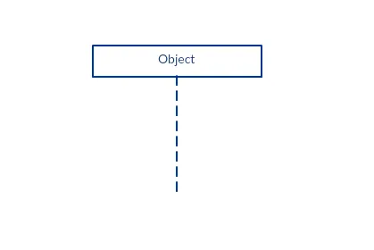
Jadaskeem koosneb mitmest sellisest eluliini tähisest, mis tuleks paigutada
joonise ülaossa horisontaalselt kõrvuti. Ükski eluliini tähis ei tohiks kattuda teisega.
Need tähistavad erinevaid objekte või komponente, mis süsteemis omavahel järjestuse jooksul suhtlevad.
Eluliini tähist koos näitleja elemendi sümboliga kasutatakse siis,
kui vastavat järjestikdiagrammi omab kasutusjuhtum.
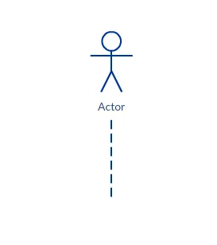
Eluliin koos üksuse elemendiga esindab süsteemi andmeid. Näiteks klienditeeninduse
rakenduses haldab Customer-üksus kogu kliendiga seotud teavet.
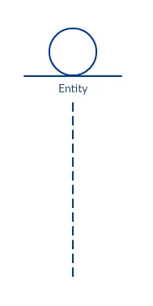
Eluliin piirielemendiga näitab süsteemi piiri või tarkvara elementi;
näiteks kasutajaliidese ekraanid, andmebaasi lüüsid või menüüd,
millega kasutajad suhtlevad, on kõik piirid.
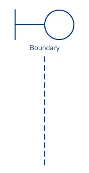
Eluliin kontroll-elemendiga tähistab juhtivat üksust või haldurit.
See organiseerib ja ajastab piiri- ja üksuselementide vahelisi
interaktsioone ning toimib nendevahelise vahendajana.
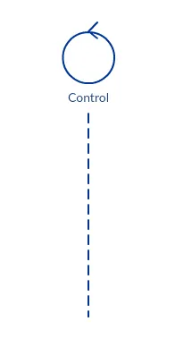
Aktiveerimisribad
Aktiveerimisriba on kast, mis asetatakse eluliinile.
Selle abil näidatakse, et objekt on aktiivne (või instantsitud) kahe objekti
vahelise interaktsiooni ajal. Riba pikkus näitab, kui kaua objekt aktiivsena püsib.
Jadaskeemis toimub kahe objekti vaheline interaktsioon siis,
kui üks objekt saadab teisele sõnumi. Aktiveerimisriba kasutamine nii sõnumi saatja
(objekt, mis sõnumi saadab) kui ka sõnumi vastuvõtja (objekt, mis sõnumi saab)
eluliinil näitab, et mõlemad on sõnumi vahetamise ajal aktiivsed / instantsitud.
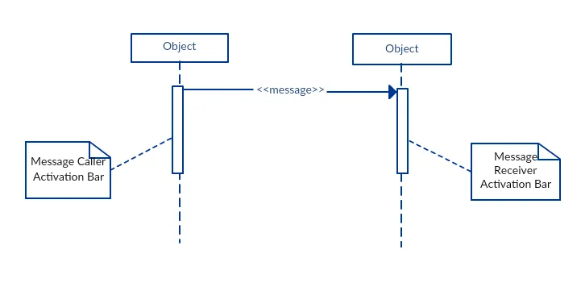
Sõnumi nooled
Nool, mis läheb sõnumi saatjalt sõnumi saajale, määratleb jadaskeemis sõnumi.
Sõnum võib liikuda ükskõik millises suunas: vasakult paremale, paremalt vasakule või
isegi tagasi sõnumi saatjale endale. Noolele saab märkida, millist sõnumit ühest objektist
teise saadetakse, ning erinevate nooleotstega saab näidata,
millist tüüpi sõnumit saadetakse või vastu võetakse.
Sõnumi nool on varustatud kirjeldusega, mida nimetatakse sõnumi signatuuriks.
Selle sõnumi signatuuri vorming on allpool toodud kujul.
Kõik osad peale message_name’i (sõnumi_nimi) on valikulised.
attribute = message_name (arguments): return_type
Sünkroonne sõnum
Nagu aktiveerimisribade näites näha, kasutatakse sünkroonset sõnumit siis,
kui saatja ootab, kuni saaja sõnumi töötleb ja vastuse tagastab, enne kui liigub järgmise sõnumi juurde.
Selle sõnumitüübi tähistamiseks kasutatakse täidetud nooleotsa, nagu allpool näidatud.
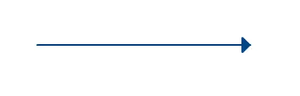
Asünkroonne sõnum
Asünkroonset sõnumit kasutatakse siis, kui sõnumi saatja ei oota, kuni vastuvõtja
sõnumi töötleb ja vastuse tagastab, vaid saadab vahepeal sõnumeid ka
teistele objektidele süsteemis. Selle sõnumitüübi tähistamiseks kasutatakse
joonega nooleotsa, nagu allolevas näites.
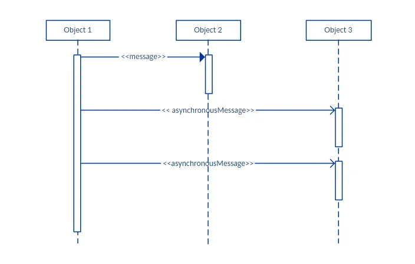
Tagastussõnum
Tagastussõnumit kasutatakse näitamaks, et sõnumi saaja on sõnumi töötlemise lõpetanud ja
annab juhtimise tagasi sõnumi saatjale. Tagastussõnumid on valikulised tähistused,
kuna aktiveerimisriba, mis on käivitatud sünkroonse sõnumiga, viitab alati ka tagastussõnumile.
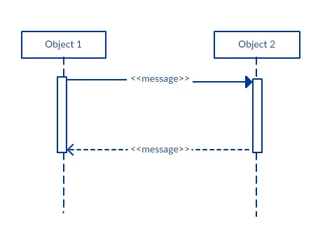
Nipp: Saad oma diagrammide liigset täitumist vältida, kui vähendad tagastussõnumite kasutamist,
sest tagastusväärtust saab näidata ka esialgsel sõnumi noolel.
Osaleja loomise sõnum
Objektid ei pruugi eksisteerida kogu sündmuste järjestuse vältel.
Objekte või osalejaid saab luua vastavalt saadetavale sõnumile.
Kui on vaja näidata, et konkreetne osaleja eksisteerib alles pärast loomiskutse saatmist,
võib kasutada „langeva osaleja“ (dropped participant) kasti tähistust.
Kui loodud osaleja teeb kohe pärast loomist midagi,
tuleks osaleja kasti alla lisada aktiveerimisriba.
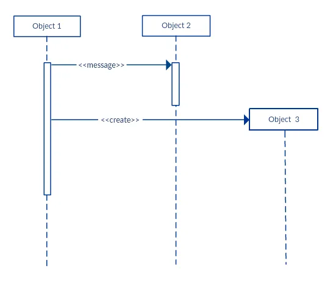
Osaleja kustutamise sõnum
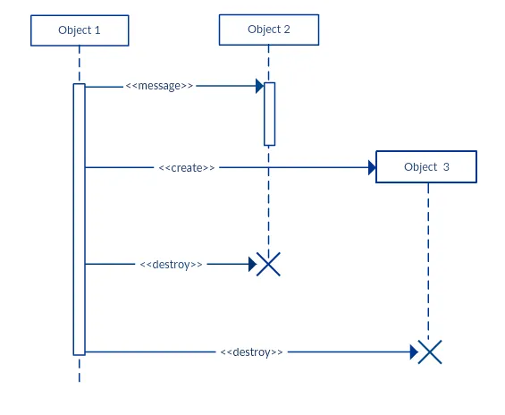
Samamoodi võib osalejaid, keda enam ei vajata, jadaskeemidest eemaldada.
Selleks lisatakse vastava osaleja eluliini lõppu „X“-märk.
Refleksiivne sõnum
Kui objekt saadab sõnumi iseendale, nimetatakse seda refleksiivseks sõnumiks.
Seda tähistatakse sõnumi noolega, mis algab ja lõpeb samal eluliinil, nagu allpool toodud näites:
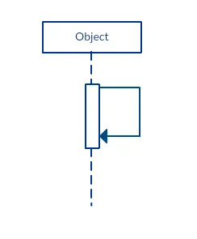
Kommentaar
UML-diagrammid võimaldavad üldjuhul kommentaaride lisamist kõikidesse UML-diagrammi tüüpidesse.
Kommentaari objektiks on ristkülik, millel on üks nurk „tagasi murtud“, nagu allpool näidatud.
Kommentaari saab seotud objektiga ühendada katkendjoonega.
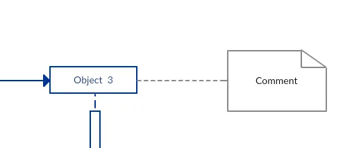
Jadaskeemide parimad tavad
- Keerukate interaktsioonide haldamine järjestikfragmendiga
Järjestikfragmenti kujutatakse kastina, mis raamib objektide vaheliste
interaktsioonide lõigu (nagu näidetes allpool) jadaskeemis.
Seda kasutatakse keerukate interaktsioonide, nagu alternatiivsed vood ja tsüklid,
struktureeritumaks näitamiseks. Fragmendi vasakus ülanurgas asub operaator ehk
fragmendioperaator, mis määrab, mis tüüpi fragmentiga on tegemist.
Alternatiivid
Alternatiivset ühendfragmenti kasutatakse siis, kui valik tuleb teha kahe või
enama sõnumijada vahel. See modelleerib „kui...siis...muidu” loogikat.
Alternatiivne fragment on kujutatud suure ristküliku või raamina;
selle määratlemiseks kirjutatakse raami pealkirjakasti (ehk fragmendioperaatori kasti) ’alt’.
Kahe või enama alternatiivi näitamiseks jagatakse suurem ristkülik katkendjoone abil nn
interaktsioonioperandideks, nagu jadaskeemi näites allpool. Iga operandil on kaitse („guard“),
mille vastu see testitakse, ning kaitse asetatakse operandi vasakusse ülanurka.
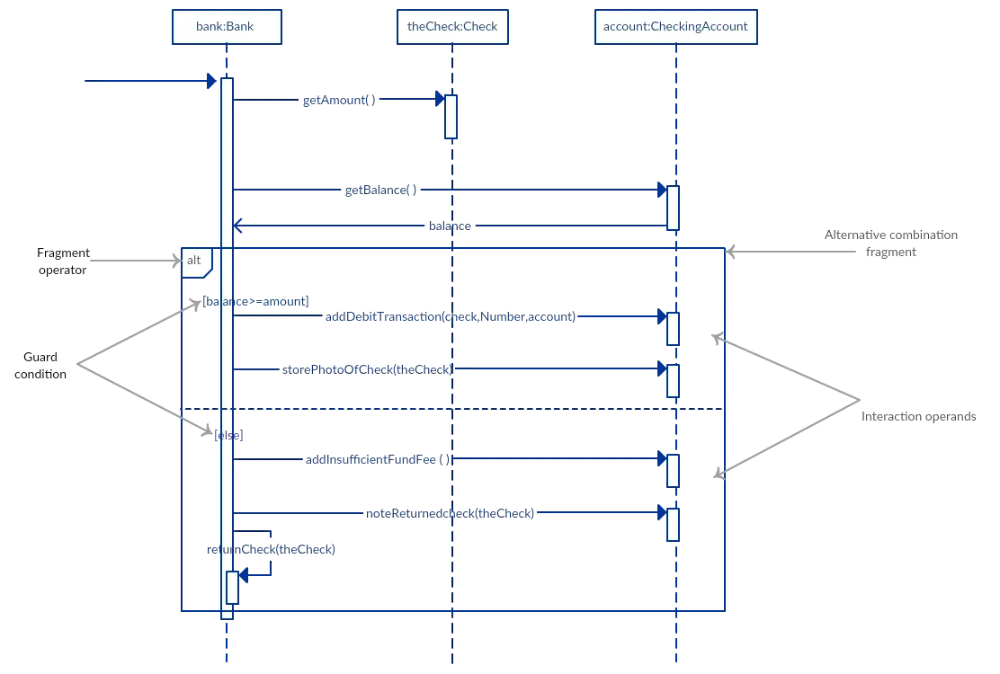
Valikud
Valikuline ühendfragment näitab järjestust, mis toimub ainult kindla tingimuse korral;
vastasel juhul see järjestus ei toimu. See modelleerib „kui...siis“ loogikat.
Nagu alternatiivne fragment, on ka valikuline fragment kujutatud ristkülikukujulise raamiga,
mille pealkirjakasti on kirjutatud ’opt’.
Erinevalt alternatiivsest fragmendist ei jagata valikulist fragmenti kaheks või enamaks operandiks.
Valiku kaitse („guard“) paigutatakse raami vasakusse ülanurka.
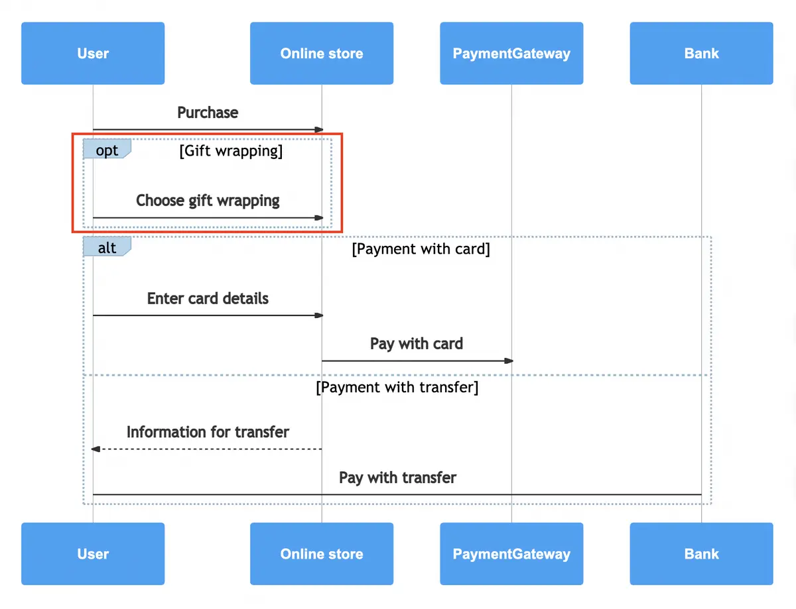
Tsüklid
Tsükli fragmenti kasutatakse korduva järjestuse esitamiseks.
Kirjutage sõna ‘loop’ nime lahtrisse ja asetage tingimus (guard)
raami vasakusse ülanurka.
Lisaks boolean kontrollile võib tsükli fragmendi tingimusel olla
veel kaks eritingimust, mida saab kontrollida.
Need on minimaalne korduste arv (kirjutatakse minint = [arv]) ja
maksimaalne korduste arv (kirjutatakse maxint = [arv]).
Kui tegemist on minimaalse korduste arvu tingimusega, peab tsükkel
täituma vähemalt nii mitu korda, kui on märgitud, ning kui tegemist on
maksimaalse korduste arvu tingimusega, ei tohi tsükkel täituda rohkem kui märgitud.
Viitefragment
Viitefragmenti kasutatakse suurte jadaskeemide haldamiseks.
See võimaldab ühte järjestusskeemi osa taaskasutada teises skeemis,
ehk teisisõnu, viitefragmendiga saab viidata ühe skeemi osale teises skeemis.
Viitefragmendi määramiseks tuleb kirjutada raami nime lahtrisse ‘ref’
ja raami sisse selle jadaskeemi nimi, millele viidatakse.
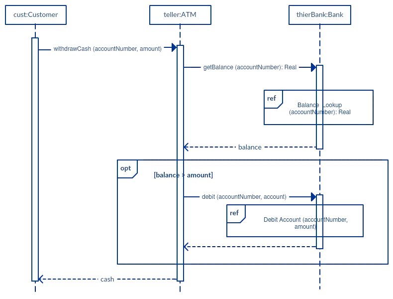
- Joonista väiksemaid jadaskeeme, mis haaravad kasutusjuhtumi olemuse.
Ära koorma jadaskeemi paljude objektide ja sõnumigruppidega,
mis võivad lugejat segadusse ajada. Selle asemel loo mõned väiksemad
jadaskeemid, mis selgelt näitavad, mida sinu süsteem teeb.
Veendu, et skeem mahuks ühele lehele ja jätaks ruumi ka selgitavatele märkustele.
Samuti, selle asemel et joonistada kümneid jadaskeeme, uuri, mis on
stsenaariumides ühist, ning keskendu sellele. Kui kood on selge ja arusaadav,
polegi alati vaja jadaskeemi joonistada.
Kuidas joonistada jadaskeemi
Jadaskeem kujutab üht konkreetset kasutusjuhtumit või sündmuste voogu.
Jadaskeemi sõnumivoog põhineb selle kasutusjuhtumi kirjel.
Enne kui hakkad jadaskeemi joonistama või otsustad, millised interaktsioonid
sinna lisada, tuleks esmalt koostada kasutusjuhtumi skeem ning põhjalik kirjeldus,
mida see kasutusjuhtum teeb.
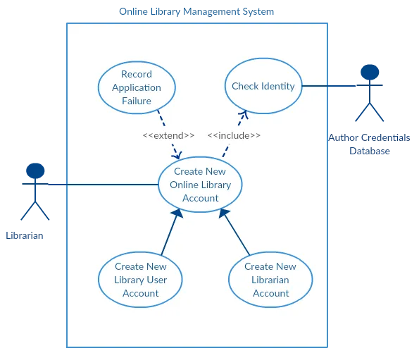
Ülaltoodud kasutusjuhtumi diagrammi näites „Loo uus online-raamatukogu
konto” keskendume kasutusjuhtumile „Loo uus kasutajakonto”, et
joonistada selle kohta jadaskeemi näide.
Enne jadaskeemi joonistamist tuleb tuvastada objektid või
osalised, kes on seotud uue kasutajakonto loomisega. Need on:
- Raamatukoguhoidja
- Online-raamatukogu haldussüsteem
- Kasutaja mandaadi andmebaas
- E-posti süsteem
Kui objektid on tuvastatud, on oluline kirjutada üksikasjalik
kirjeldus sellest, mida kasutusjuhtum teeb. Sellest kirjeldusest saab
hõlpsasti välja tuua interaktsioonid (mis peaksid jadaskeemi
minema), mis nende objektide vahel toimuvad, kui kasutusjuhtum
käivitatakse.
Siin on sammud, mis toimuvad kasutusjuhtumis „Loo uus raamatukogu
kasutajakonto”.
- Raamatukoguhoidja palub süsteemil luua uus online-raamatukogu konto
- Raamatukoguhoidja valib kasutajakonto tüübi
- Raamatukoguhoidja sisestab kasutaja andmed
- Kasutaja andmeid kontrollitakse kasutaja mandaadi andmebaasi abil
- Luuakse uus raamatukogu kasutajakonto
- Uue konto andmete kokkuvõte saadetakse kasutajale e-postiga
Iga sammu põhjal saab hõlpsasti määratleda, milliseid sõnumeid
objektide vahel jadaskeemis vahetatakse. Kui see on selge, võib
hakata järjestusskeemi joonistama.
Allolev jadaskeem näitab, kuidas online-raamatukogu
haldussüsteemi objektid omavahel suhtlevad, et täita funktsiooni „Loo
uus raamatukogu kasutajakonto”.
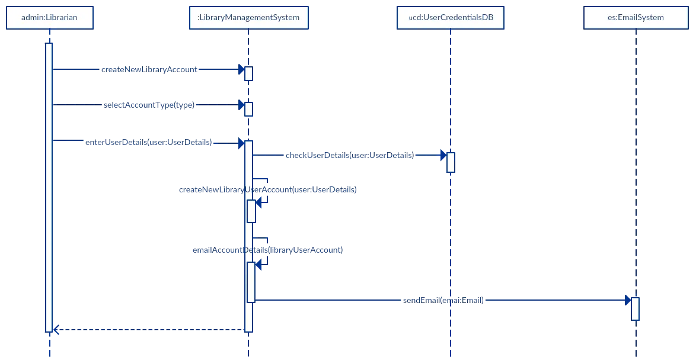
Jadaskeemi levinumad vead
Jadaskeemide joonistamisel tehakse sageli järgmisi vigu. Neid
vältides saad tagada oma skeemi kvaliteedi.
- Liiga palju detaile lisamine. See muudab skeemi segaseks ja raskesti loetavaks.
- Aegunud või vananenud järjestusskeemid, mis ei vasta enam süsteemi
liidestele või tegelikule arhitektuurile. Ära unusta neid skeeme
asendada või muuta.
- Tühja ruumi mitte jätmine kasutusjuhtumi teksti ja sõnuminoole
vahele; see muudab skeemi raskesti loetavaks.
- Sõnuminoole päritolu mitte hoolikas läbimõtlemine.
allikad:
Creately
Perplexity
gleek
Perplexity